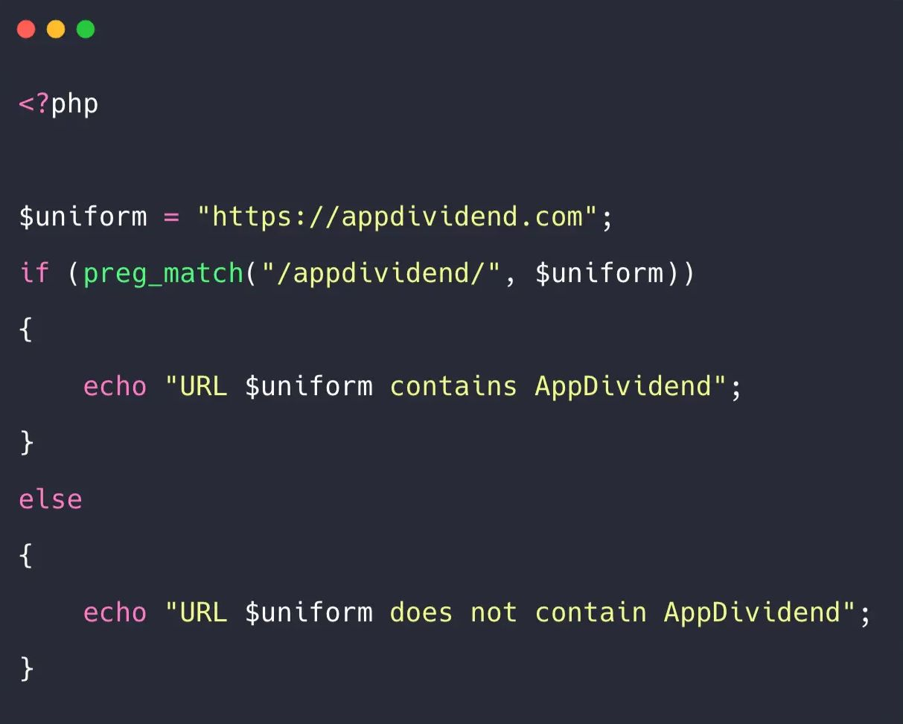

Regex Oque é?
Regex, ou expressões regulares, refere-se a uma sequência de caracteres que define um padrão de busca. É uma ferramenta poderosa utilizada em processamento de texto para realizar operações como correspondência de padrões, busca, substituição e validação de strings. As expressões regulares consistem em caracteres literais (que correspondem exatamente a si mesmos) e caracteres especiais (que representam classes de caracteres, quantificadores, grupos, etc.). Por exemplo, o caractere . em uma expressão regular representa qualquer caractere único, enquanto * indica zero ou mais repetições do elemento anterior. As expressões regulares são amplamente utilizadas em programação, manipulação de dados, busca e substituição de texto em editores de texto avançados, validação de entradas de formulários, extração de informações de documentos de texto, entre outras tarefas. Exemplo simples de uma expressão regular: o padrão \d+ representa um ou mais dígitos consecutivos. Assim, ao aplicar essa expressão a uma string, ela corresponderá a qualquer sequência de dígitos. É importante notar que a sintaxe e o comportamento exato de expressões regulares podem variar um pouco entre linguagens de programação, mas o conceito geral é semelhante.

Em JavaScript, você pode usar o objeto RegExp para trabalhar com expressões regulares. Aqui está um exemplo simples:
// Criar uma expressão regular para encontrar números de telefone no formato (123) 456-7890
var regex = /\(\d{3}\) \d{3}-\d{4}/;
// String de exemplo
var texto = "Entre em contato: (123) 456-7890";
// Procurar por correspondências na string
var correspondencias = texto.match(regex);
// Se houver correspondências, imprima o número de telefone encontrado
if (correspondencias) { var numeroTelefone = correspondencias[0]; console.log("Número de telefone encontrado: " + numeroTelefone); } else { console.log("Nenhum número de telefone encontrado."); }
Em Python, a biblioteca padrão "re" é usada para trabalhar com expressões regulares. Aqui está um exemplo semelhante:
import re
//Criar um padrão para encontrar números de telefone no formato (123) 456-7890
padrao = re.compile(r'\(\d{3}\) \d{3}-\d{4}')
//String de exemplo
texto = "Entre em contato: (123) 456-7890"
//Procurar por correspondências na string
correspondencias = padrao.search(texto)
//Se houver correspondências, imprima o número de telefone encontrado
if correspondencias: numero_telefone = correspondencias.group() print("Número de telefone encontrado:", numero_telefone) else: print("Nenhum número de telefone encontrado.")
Em C#, você pode usar o namespace System.Text.RegularExpressions. Aqui está um exemplo:
using System; using System.Text.RegularExpressions; class Program { static void Main() {
// Criar uma expressão regular para encontrar números de telefone no formato (123) 456-7890
Regex regex = new Regex(@"\(\d{3}\) \d{3}-\d{4}");
// String de exemplo
string texto = "Entre em contato: (123) 456-7890";
// Procurar por correspondências na string
Match correspondencia = regex.Match(texto);
// Se houver correspondências, imprima o número de telefone encontrado
if (correspondencia.Success) { string numeroTelefone = correspondencia.Value; Console.WriteLine("Número de telefone encontrado: " + numeroTelefone); } else { Console.WriteLine("Nenhum número de telefone encontrado."); } } }
Em PHP, as funções preg_match() e preg_replace() são comumente usadas para expressões regulares. Aqui está um exemplo:
?php
// Criar uma expressão regular para encontrar números de telefone no formato (123) 456-7890
$padrao = '/\(\d{3}\) \d{3}-\d{4}/';
// String de exemplo
$texto = "Entre em contato: (123) 456-7890";
// Procurar por correspondências na string
if (preg_match($padrao, $texto, $correspondencias)) { $numeroTelefone = $correspondencias[0]; echo "Número de telefone encontrado: " . $numeroTelefone;} else { echo "Nenhum número de telefone encontrado."; } ?>
Jquery
Jquery é uma biblioteca JavaScript rápida, leve e poderosa. Desenvolvida para simplificar a manipulação de documentos HTML, o gerenciamento de eventos, animações e interações AJAX (Asynchronous JavaScript and XML), o jQuery torna o desenvolvimento web mais fácil e eficiente.
Seleção de Elementos:
jQuery permite selecionar elementos HTML de maneira fácil e eficiente usando seletores similares aos seletores CSS. Isso simplifica a manipulação de elementos na página.
// Exemplo de seleção de elemento usando jQuery
var paragrafos = $("p"); // Seleciona todos os parágrafos na página
Manipulação de Elementos:
Com o jQuery, você pode facilmente modificar o conteúdo, estilos e atributos dos elementos HTML.
// Exemplo de manipulação de conteúdo usando jQuery
$("p").text("Novo conteúdo do parágrafo");
Eventos:
O jQuery simplifica o manuseio de eventos, como cliques, teclas pressionadas, etc.
// Exemplo de manipulação de eventos usando jQuery
$("button").click(function() { alert("Botão clicado!"); });
Animações:
O jQuery facilita a criação de animações e transições suaves em elementos da página.
// Exemplo de animação usando jQuery
$("div").animate({ marginLeft: "50px" }, "slow");
Formulário
Nome
Email
Data de Nascimento
Telefone
CPF
Enviar